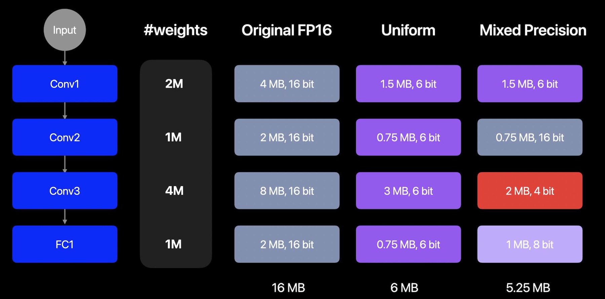

Mixed-Precision Compression¶
The key idea behind mixed precision compression is that compressing different layers of a model can degrade its quality by different degrees. By adjusting precision for each layer accordingly, we can improve the overall model quality.
The image below illustrates this idea (for a made up model). It shows how a “mixed-precision” weight compression scheme might look like, compared to a uniform compression scheme. For instance, a more sensitive layer (conv2) maybe kept in FP16 precision, while a less sensitive layer (conv3) maybe compressed more aggressively to 4 bits. Sensitivity can be defined in many ways. The way we define it in this doc and the linked examples, is how much compressing just a single layer changes the model output, compared to the output of the uncompressed original model.

An example on how a mixed precision compression of a model may look like¶
Mixed-Precision Compression Workflow¶
Mixed-precision compression assigns a different bitwidth to each layer based on the layer’s sensitivity to compression. The rest of this section walks through a generic workflow you can apply to your own model using coreai-opt APIs with any compressor — or a mix of them. The code blocks below are pseudocode that describe the algorithm.
The workflow has three stages:
Stage 1 — Layer-wise sensitivity computation¶
To compute sensitivity for a layer L with a given candidate configuration C, we construct a config that targets only layer L with C (leaving every other layer uncompressed) and apply it to a copy of the baseline. Using this candidate model, we compute a sensitivity score (for example, by computing PSNR between baseline and candidate model outputs). This process is repeated for all configured model layers and candidate compression configs specified. The resulting sensitivity values can then be saved to disk so the next two stages can be iterated cheaply without recomputing them.
for each layer L in the model:
C = ... # coreai_opt config that targets layer L via op_name or module_name
for each candidate config C:
compressed_model = compress(original_model, layer=L, config=C)
reference_out = baseline_model(data)
compressed_model_out = compressed_model(data)
sensitivity[L, C] = metric(reference_out, compressed_model_out) # ideally average this over a few data samples
Stage 2 — Recipe generation¶
Once we have the sensitivity scores of all the layers and candidate configs, we can generate a mixed-precision recipe for compressing the model. A recipe is essentially a mapping from each layer to its chosen candidate configuration.
Several strategies can be applied for determining the mixed-precision recipe given a constraint — for example, a target average bits-per-weight (BPW) — and aim to balance model size reduction with minimal accuracy loss.
A simple greedy approach often works well:
Sort all
(layer, config)tuples by sensitivity in descending order (least quality loss first).Walk the sorted list, applying each assignment to the recipe (overriding earlier assignments for the same layer).
After each step, recompute the realized BPW.
Stop when the target BPW constraint is met. Layers whose tuples are never reached stay uncompressed.
If the walk exhausts the list without satisfying the constraint, no greedy solution exists.
Stage 3 — Apply the recipe¶
Apply the recipe to obtain the mixed-precision compressed model, and evaluate its accuracy and the effective BPW.
Construct accuracy vs BPW graph¶
Sweeping the constraint used in the bit-allocation algorithm (e.g. target BPW) and re-running stages 2 and 3 produces a tradeoff curve. Unlike uniform compression — which gives discrete points at supported bitwidths — mixed-precision lets you pick any point along a continuous accuracy-vs-BPW curve.
Pick the best tradeoff point, based on your use case, from the accuracy-vs-BPW graph.
Applying to different compression techniques¶
The workflow above is technique-agnostic — it applies to weight palettization, weight quantization, activation quantization, or any combination of these. The same recipe-generation pipeline can also mix techniques (e.g. some layers palettized, others quantized) by including both kinds of candidates in stage 1 and dispatching to the appropriate compressor in stage 3.
Likewise, the per-layer setting being varied across candidate configs does not have to be a bitwidth. It can be any parameter in the underlying compression spec:
Palettization:
n_bits(e.g. 2/4/6-bit) is the most common axis, butgranularity(per-tensor vs. per-channel vs. per-grouped-channel) andcluster_dimare also valid.Quantization: bit width (e.g. INT4 / INT6 / INT8 / FP4 / FP8), granularity (per-tensor vs. per-channel), scheme (symmetric vs. affine), and which tensors get quantized (weights only, weights + activations, etc.).
Examples¶
Mixed-precision palettization with ResNet50 — applies palettization with 2/4/6-bit per-tensor candidate configs and the greedy approach targeting a BPW of 4.
coreai-models — the same workflow is applied to a few LLMs in this repository to produce mixed precision compression recipes. Users can find the mixed precision configs in the repo and apply them with
coreai-opt.